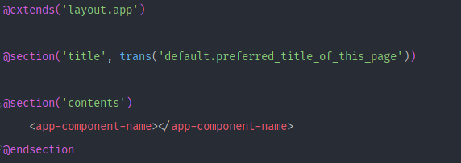
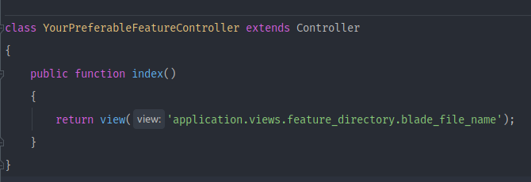
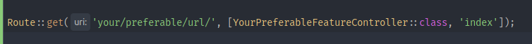
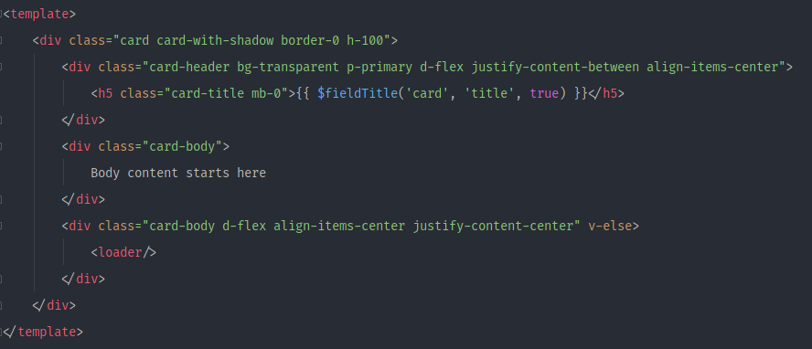

Development Guide
Language Setting
- If you would like to change any language, please copy the text from default.php to custom.php.
- Please note, we may replace all other files except the custom.php in future updates.
-
Set Settings
-
Go to "resources/lang" directory of the project.
-
Add a new directory named on your new language's code name. Like, for Spanish language your directory name would be 'es', for Arabic 'ar' etc.
For getting more language's code name you can go to "config/language.php" of the project. Here you can find all the possible language name and their code.
N:B: Make sure the directory name is same as the valid code of your language.
-
Copy all the files from "resources/lang/en" directory.
-
Change "resources/lang/your-new-language-name/default.php" file. Just make the changes to the right sided text in your language. Suppose, you are adding a new language "Portuguese" in this app. So add a new directory named "portuguese" in "resources/lang". Copy all files from "resources/lang/en" directory to "resources/lang/pr". Then change the "default.php" file in this directory. There can be translations from English (such as, "add"=>"Add"). You should change this to portuguese (such as, "add" => "Adicionar").
-
-
Update language
-
Go to "Settings">"Application Settings".
-
Select your preferred language from "Language Settings" section. Save the changes.
-
If you would like to change any language, please copy the text from default.php to custom.php.
-
Please note, we may replace all other files except the custom.php in future updates.
-
After changing any text, please remember to clear cache from the Settings > Application settings by login as admin.
-
Environment configuration
-
Open your project on an editor. Open terminal and run "npm i". Make sure that Nodejs is installed on your PC. If Nodejs is not installed on your PC Click here to download and install Nodejs.
-
After successfully installed node_modules, To change something in vue component you need to go through the following steps -
Steps : Go to resources/js/tenant/Components/View (You will find all the component here with specific folder) > Change something in vue component > run "npm run watch" command from terminal (You must have Nodejs install first) > Refresh browser to see the change
Add New Page
-
Go to "resources/views/tenant/" directory of the project.
-
Create a directory and name it similar to your feature.
-
Add a new blade file with the following code. Make sure to change "default .preferred_title_of_this_page" to your page title which is added in default.php of your language file and change the "app-component-name" to your component name related to feature. (component create process described below) for app level use @extends('layout.app'), for brand level use@extends('layout.brand')
 -
Go to "app/Http/Controllers/Tenant" make a directory similar to your feature name. Create a controller class like "YourFeatureNameController", which is extends "App\Http\Controllers\Controller". create a function that returns view of the page you created before. Like for example:
 -
Go to "routes/" directory, check route files and subdirectories. You can create a .php file or you also can add in existing file which is similar to your feature. and create a route for your page like that-
 -
Now go to "resources/js/tenant/Components/View" directory. make a directory related to your feature.
-
Add a new .vue file. Like for example-
Write your desired HTML code inside the component.
-
Go to "resources/js/tenant/tenantComponent.js" file and register your vue component

Save your changes. Make sure that your component is compiling successfully.
-
Now hit your route in the browser and see the new page.
Change Color & Design
After installing the application locally you can modify and change any design by changing the
files from resources/sass folder.
Change Brand Color
- Install the app locally.
- Go to
resources/sass/core/_variables.scssfile. - On line
22you can see$brand-color: #019AFF; - Change the color code with your new color code.
- Build the css with
npm - And your application should appear with new brand color.